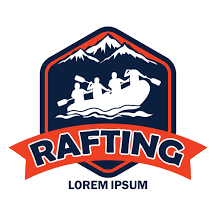
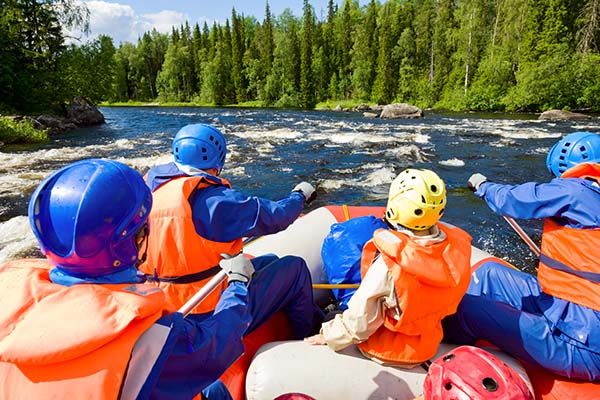
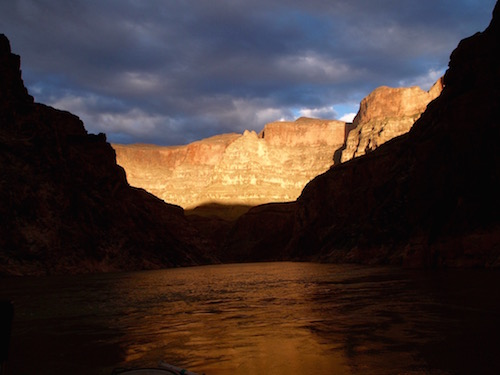

Company Purpose:
The purpose of Lorem Rafting Company is to provide exhilarating and unforgettable rafting experiences, connecting people with nature and fostering a sense of adventure and camaraderie.


Company Purpose:
The purpose of Lorem Rafting Company is to provide exhilarating and unforgettable rafting experiences, connecting people with nature and fostering a sense of adventure and camaraderie.
The Lorem Rafting Company has a rich history that spans several decades, marked by its commitment to providing thrilling rafting experiences and promoting environmental conservation. Here is a brief history of the Lorem Rafting Company:
Founding and Early Years:
Lorem Rafting Company was founded in 1985 by John Doe, an experienced adventurer and nature enthusiast. With a passion for whitewater rafting, John set out to establish a company that would offer exhilarating rafting trips while respecting and preserving the natural environment. The company started with a small team of skilled guides and a few rafts, offering trips on nearby rivers.
Environmental Stewardship:
Lorem Rafting Company always recognized the importance of responsible tourism and environmental stewardship. In the early 2000s, the company took significant steps to minimize its ecological footprint. They implemented sustainable practices such as waste reduction, river cleanup initiatives, and educational programs to raise awareness about environmental conservation among guests and the local community. The Lorem Rafting Company became a pioneer in promoting ecotourism principles within the rafting industry.
Community Engagement and Social Initiatives:
Lorem Rafting Company actively engaged with local communities, contributing to their social and economic development. They partnered with nearby villages and supported initiatives that aimed to improve education, healthcare, and infrastructure in the region. The company's commitment to responsible and ethical practices earned them respect and admiration from both visitors and the local community.
Present Day:
Today, the Lorem Rafting Company continues to thrive as a leading provider of adventurous rafting experiences. They offer a range of trips, from scenic family-friendly floats to adrenaline-pumping rapids for experienced adventurers. The company remains dedicated to its core values of adventure, teamwork, customer satisfaction, and environmental preservation. With a team of passionate guides and a focus on sustainable tourism, the Lorem Rafting Company looks forward to many more years of delivering unforgettable rafting experiences while safeguarding the natural wonders they cherish.
This brief history showcases the Lorem Rafting Company's evolution from a small rafting outfit to a renowned adventure tourism provider with a strong commitment to environmental and community initiatives.



